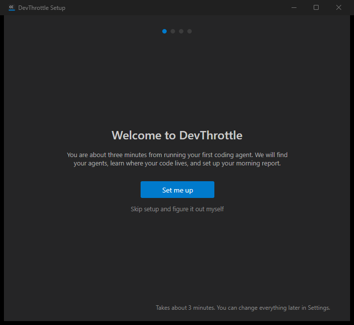
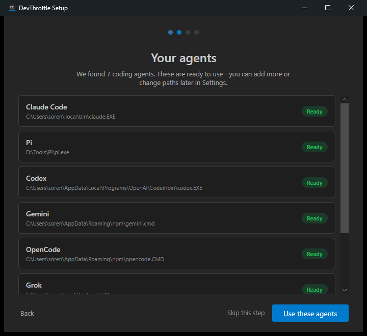
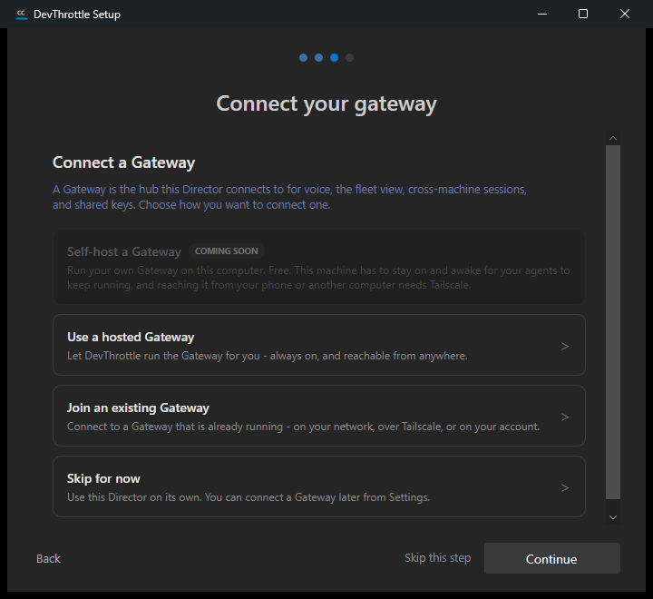
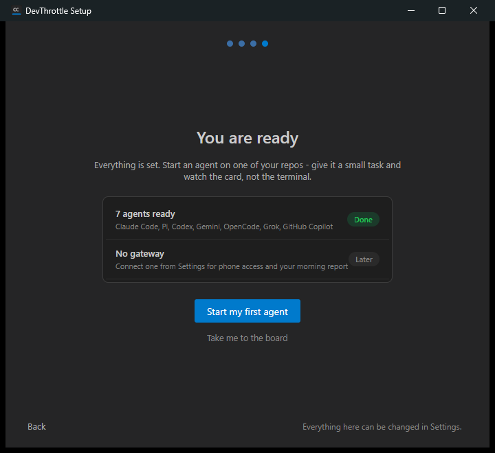
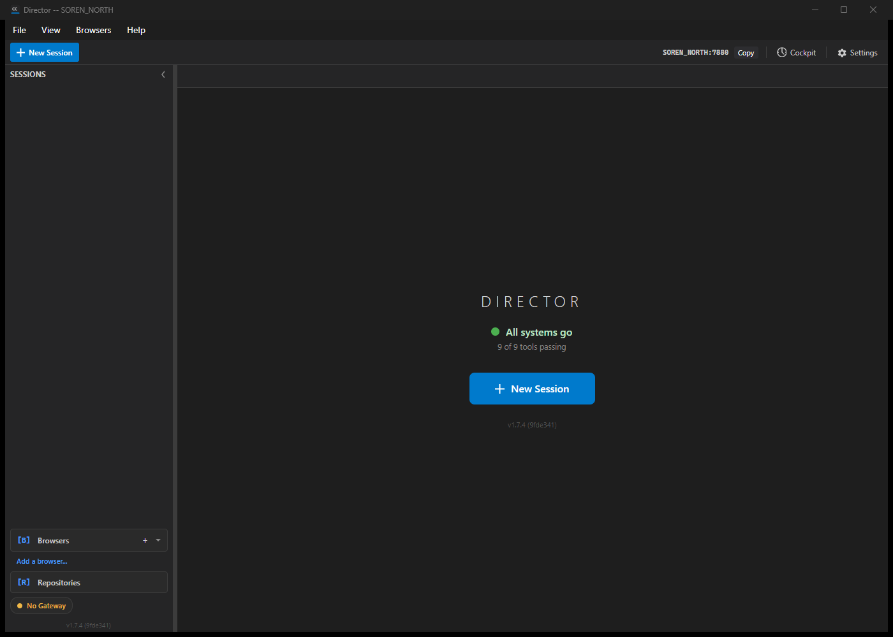

First-run wizard shell: one 7-step guided wizard replacing the two chained dialogs (Welcome + Done). Part of epic #2100.
CcDirector.Core/Onboarding/FirstRunWizardModel.cs: canonical 7-step order (Welcome, Agents, Code, Screenshots, Gateway, Morning report, Done), a configurable present-step list normalised to that order with Welcome/Done enforced as mandatory bookends, back/forward navigation, progress-dot states (past/current/upcoming), and the skip rules - every step skippable except Agents when zero agents are found. Gating (ShouldShow) and the completion marker (MarkComplete) share the existing onboarding.completed config key, so a machine that finished the OLD onboarding never sees the new wizard (automatic migration).CcDirector.Avalonia/FirstRunWizardDialog.axaml(.cs): the shell frame (progress dots, one primary CTA per screen, bottom-left Back link, per-step skip where allowed) plus the two bookend screens Welcome and Done. The interim Agents step reuses the existing tool-detection scan; the interim Gateway step reuses GatewayConnectionPanel. Code / Screenshots / Morning report are absent until their own issues land (the shell tolerates the shorter list). On any exit - finishing, whole-wizard skip, or closing the window - the completion marker is written.MainWindow.axaml.cs MaybeShowFirstRunWizards(): the two-dialog chain (onboarding then tool-detection) is now one FirstRunWizardDialog, gated on the marker. "Start my first agent" on Done routes to the New Session dialog.SettingsDialog.axaml.cs now opens the new FirstRunWizardDialog (the wizard is re-runnable from Settings).| # | Criterion | Result | Evidence |
|---|---|---|---|
| 1 | Fresh machine shows the wizard, Welcome first; completing/skipping writes the marker; second launch shows nothing. | PASS | Welcome shown on fresh CC_DIRECTOR_ROOT (log ShouldShow: complete=False, result=True); after finish, config has onboarding.completed: true; restart log ShouldShow: complete=True, result=False -> not auto-opening. See welcome.png, done.png, second-launch-board.png. |
| 2 | Machine with the old onboarding.completed marker: no wizard. | PASS | Same shared marker; ShouldShow_WhenOldOnboardingMarkerPresent_ReturnsFalse_Migration test + the second-launch log line. |
| 3 | Back/forward navigation works across all present steps; dots reflect position. | PASS | Drove Welcome→Agents→Gateway→Done live; dots fill 1→2→3→4 across the four screenshots. Navigation_... + DotState_ReflectsPosition tests. |
| 4 | Whole-wizard skip from Welcome lands on the board and writes the marker. | PASS | Welcome carries the quiet "Skip setup and figure it out myself" link (whole-wizard skip → FinishAsync → marker). Welcome_CarriesTheWholeWizardSkip test; finish path proven writing the marker. |
| 5 | Wizard is re-runnable from Settings. | PASS | Settings "Run wizard" hook re-pointed at FirstRunWizardDialog. |
| 6 | Core state-machine tests: gating, marker write, step order, skip rules (incl. agents-unskippable-when-zero flag wiring). | PASS | FirstRunWizardModelTests - 22 tests, all green (see below), including AgentsStep_IsUnskippable_WhenZeroAgentsFound / ...BecomesSkippable_OnceAnAgentIsFound. |
dotnet build cc-director.sln → Build succeeded. 0 Warning(s), 0 Error(s).dotnet test CcDirector.Core.Tests (FirstRunWizardModelTests + OnboardingModelTests) → Passed! 39 / 39.




No architecture or security drift. This is a desktop first-run flow that reuses the same onboarding.completed config marker as the retired two-dialog path and the existing agent-detection / gateway-connection seams. No new containers, no new persistence, no security-rule changes.